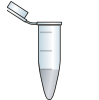

Data Science
Self study and MOOCs applied to my MSc thesis. Sexy.
daniel.siegle@gmail.com | 919-680-6639


Recent projects
OpenScience
Working towards making my thesis research fully reproducible through remote hosting of code, data and computational environment.
Primary technologies
- Docker
- Figshare
- Git and github
- Ipython notebooks
Other tools
Amazon web services, Linux, Javascript, jQuery, Bootstrap.js and CSS.Cytochrome P450 Inhibitor Classification with Statistical Learning
Built machine learning models from high throughput screening data to predict the potential for interference with liver enzymes from chemical structure. Then compared the performance of each type of model.
Primary technologies
- IPython notebooks
- Molecular Operating Environment (MOE)
- Scikit-learn
Other tools
Github, Pandas, Matplotlib, Linux, Amazon web services, remote server setup and administrationPhenotype Profiling
Designed a multivariate analysis of automated microscopy images for a breast cancer screening assay.
Primary technologies
- Cellprofiler
- JMP
- R
- BD Pathway 855
Other tools
Cell culture, assay design, Matlab/Octave and Design of experiments.About me
I started my career as a biologist alternating between counting fish in Alaska and biopharmaceutical manufacturing in clean rooms. In order to move out of technician roles, I pursued a masters degree in drug discovery and was pleasantly surprised that I could catch up on the 15 years of math and computing progress I had skipped since my BS. Following my interests led to learning the ins and outs of experimental design and data analysis. View my old resume.


Jan. 2001-Sept. 2002, July 2006-March 2011
Biotechnology
At all scales of biopharmaceutical manufacturing. Yes all.
1999
2000
2001
2002
2003
2004
2005
2006
2007
2008
2009
2010
2011
2012
2013
2014
July 1999-May 2000, Sept.2002-April 2006
Fisheries Observer
Catch estimation and biological sampling at sea. Stinky. Sometimes exciting.Let's connect
I am currently looking for an opportunity to continue developing my data analysis and software engineering skills.
Shoot me an email at daniel.siegle@gmail.com and let's chat!
You can also find me online.